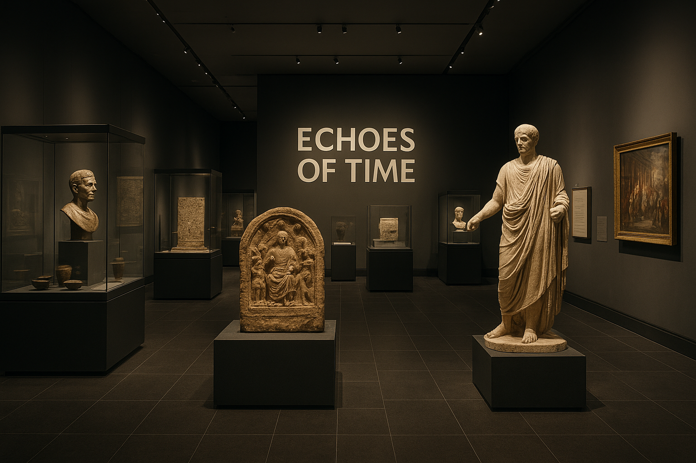

Select a Collection
Click any collection to explore its artifacts and interpretation.
Click a collection above to view more details.
Histories: Echoes of Time

The Egypt Museum Collection stands as a quiet testimony to how memory, art, and devotion have traveled across centuries. Each artifact—whether an ordinary clay lamp or a golden amulet—speaks not only about wealth or power, but about human endurance. The museum’s philosophy is to connect every visitor with the invisible hands that shaped these relics.
Many of the pieces displayed were recovered from Alexandria and Upper Egypt, places where trade once blended African, Mediterranean, and Middle Eastern influences. The broken fragments now restored under glass represent the resilience of civilizations that rose and fell, yet left behind clues of how humans organized their lives—through symbols, through art, and through ritual.
The curatorial approach for this collection was guided by two principles: authenticity and accessibility. Authenticity ensures that the story told by each exhibit remains faithful to archaeological records. Accessibility ensures that anyone—whether a scholar or a curious student—can see beyond the physical artifact to understand its cultural significance.
Standing at the heart of the museum is the “Light of Ra” gallery, where sunlight filters through a skylight to fall upon the statue of an anonymous scribe. His eyes, carved from quartz, seem to follow every visitor. He reminds us that history is not a closed book; it is a living manuscript that continues to be written by those who study, question, and preserve.